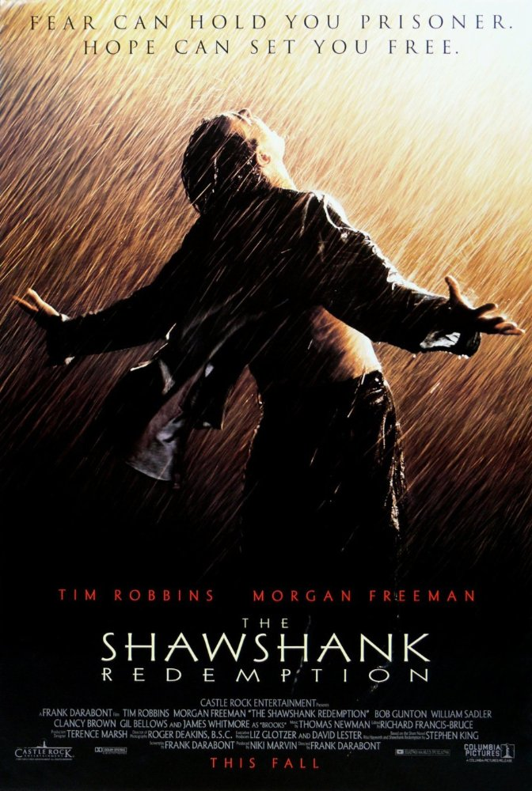
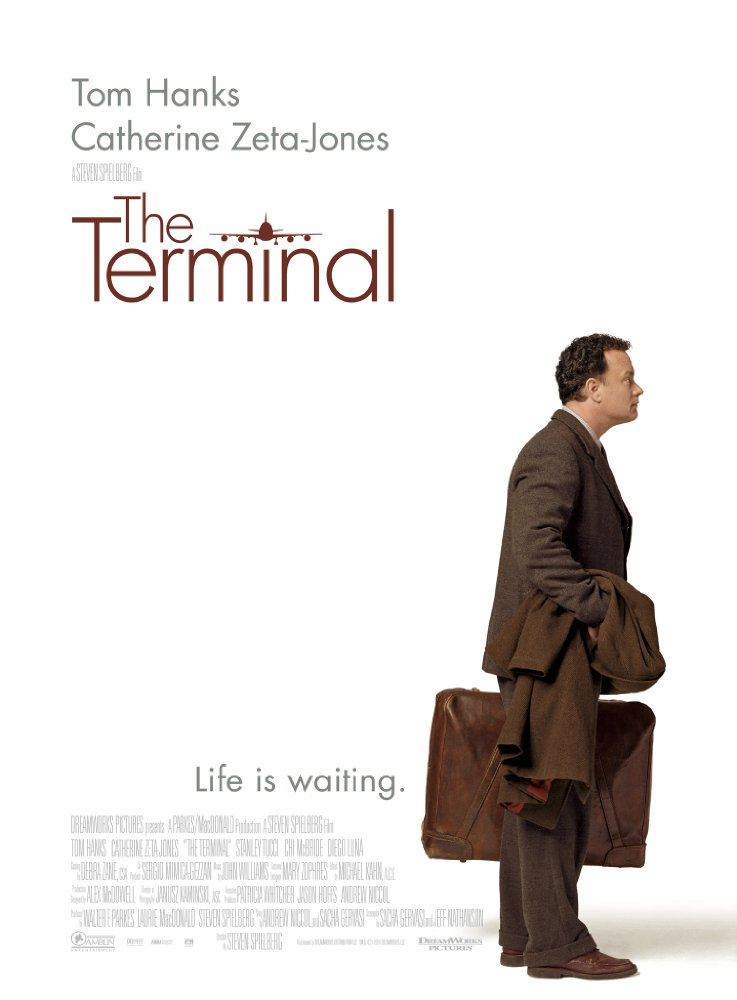

Go Back to Main Page
- Harry Potter and the Deathly Hallows: Part 2
- Genre: Adventure, Drama, Fantasy
- Release Date: 2011
- Description: Harry, Ron, and Hermione search for Voldemort's remaining Horcruxes in their effort to destroy the Dark Lord as the final battle rages on at Hogwarts
- The Shawshank Redemption
- Genre: Crime, Drama
- Release Date: 1995
- Description: Two imprisoned men bond over a number of years, finding solace and eventual redemption through acts of common decency.

- Forrest Gump
- Genre: Drama, Romance
- Release Date: 1994
- Description: JFK, LBJ, Vietnam, Watergate, and other history unfold through the perspective of an Alabama man with an IQ of 75.

- The Terminal
- Genre: Comedy, Drama, Romance
- Release Date: 2004
- Description: An eastern immigrant finds himself stranded in JFK airport, and must take up temporary residence there..
